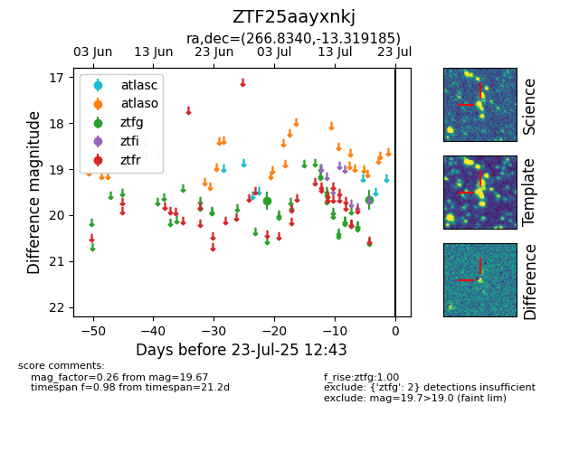

Target ZTF25aayxnkj at 2025-07-23 12:43, see:
FINK: fink-portal.org/ZTF25aayxnkj
Lasair: lasair-ztf.lsst.ac.uk/objects/ZTF25aayxnkj
ALeRCE: alerce.online/object/ZTF25aayxnkj
alt names
ZTF25aayxnkj (ztf,fink)
coordinates:
equatorial (ra, dec) = (266.8340,-13.31919)
galactic (l, b) = (13.6323,+7.70298)
photometry
last ztfg=19.67
2 ztfg detections
